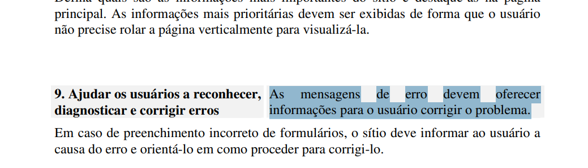
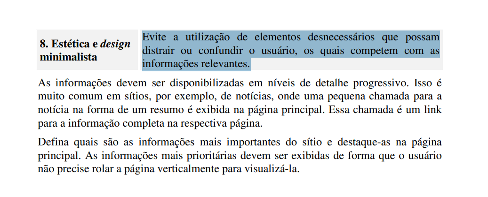
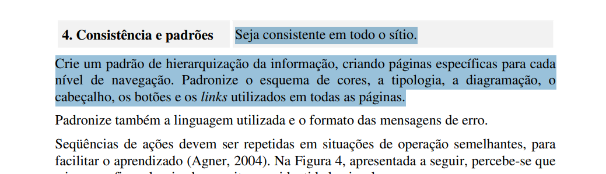

Site Selecionado: Portal da SEMOB-DF¶
Histórico de Versão e Contribuição¶
| Data | Versão | Descrição | Autor(es) | Revisor(es) |
|---|---|---|---|---|
| 05/09/2026 | 1.0 | Criação da documentação de escolha e motivação do site selecionado | Carlos Henrique | Igor Dantas |
| 06/09/2026 | 1.1 | Inserção e referenciação das figuras de evidências heurísticas | Carlos Henrique | Igor Dantas |
1. Introdução¶
Este artefato documenta a escolha do portal oficial da Secretaria de Estado de Transporte e Mobilidade do Distrito Federal (SEMOB-DF), acessível em https://www.semob.df.gov.br/, como objeto de estudo e intervenção de Interação Humano-Computador (IHC) ao longo do semestre letivo.
A seleção ocorreu após uma análise comparativa com outros portais públicos do Governo do Distrito Federal e do Governo Federal, destacando-se pela relevância social dos serviços prestados e pela abundância de oportunidades concretas de reprojeto ergonômico e de acessibilidade.
2. Motivação da Escolha¶
A escolha do portal da SEMOB-DF fundamenta-se em três pilares principais:
-
Impacto Social e Amplitude de Usuários: O transporte público e a mobilidade urbana são serviços essenciais para a população do Distrito Federal. O portal concentra demandas de altíssimo fluxo e utilidade pública direta, tais como requerimento e renovação do Passe Livre Estudantil, consulta de itinerários e linhas, emissão e recarga de cartões mobilidade e tarifas do sistema coletivo.
-
Diversidade do Perfil de Usuários: A base de usuários abrange desde estudantes e trabalhadores até pessoas idosas e pessoas com deficiência física ou sensorial. Trata-se de um público heterogêneo com variados níveis de letramento digital, o que exige conformidade estrita com padrões de usabilidade e diretrizes de acessibilidade governamental.
-
Potencial de Intervenção e Melhoria Contínua em IHC: Conforme preceituam Barbosa e Silva (2010), sistemas de apoio à administração pública devem primar pela transparência e pela redução de barreiras interativas. A identificação prévia de falhas críticas de navegação e ergonomia torna o portal um candidato ideal para a aplicação de todo o ciclo de design da disciplina, desde a análise de tarefas até a prototipação e validação empírica.
3. Critérios de Seleção¶
A equipe adotou os seguintes critérios objetivos para deliberar sobre o sistema a ser trabalhado:
-
Volume de Oportunidades de Intervenção e Desvios dos Padrões de IHC (Material Suficiente para a Equipe):
Em projetos pedagógicos orientados a equipes multidisciplinares, uma interface excessivamente polida ou estritamente em conformidade com as diretrizes de usabilidade limitaria a capacidade de contribuição equitativa dos integrantes.
O portal da SEMOB-DF foi selecionado por apresentar um volume expressivo de desconformidades ergonômicas, quebras de heurísticas (Nielsen, 1994) e problemas estruturais de acessibilidade (e-MAG / WCAG 2.1). Essa diversidade de falhas assegura que cada membro do grupo disponha de fluxos, componentes e telas suficientes para realizar análises de tarefas individuais, modelagens conceituais (HTA/GOMS) e propostas autorais de reprojeto e prototipação.
-
Acesso Estratégico e Direto ao Público-Alvo:
O ciclo de vida de IHC e os métodos empíricos (como entrevistas, questionários e testes de usabilidade) dependem intrinsecamente do contato real com o perfil de usuário definido.
Por se tratar do órgão gestor da mobilidade urbana no Distrito Federal, o público-alvo do portal é de fácil alcance e proximidade direta da equipe (composto massivamente por estudantes universitários da UnB, usuários do Passe Livre Estudantil e trabalhadores que utilizam o transporte público coletivo). Isso assegura alta viabilidade prática para o recrutamento de participantes em pesquisas qualitativas, levantamento de requisitos de IHC e condução de testes de protótipos de baixa e alta fidelidade ao longo das etapas do projeto.
-
Acesso Público, Irrestrito e de Domínio Aberto:
O sistema opera em ambiente institucional governamental aberto, viabilizando a condução de inspeções sistemáticas e coletas de evidências sem a exigência de perfis restritos, dados corporativos confidenciais ou violação de barreiras de autenticação privada.
-
Centralidade e Complexidade dos Fluxos de Tarefas:
O portal abriga processos transacionais essenciais e de grande impacto socioeconômico (consulta de linhas/horários de ônibus, validação de gratuidades tarifárias e emissão de cartões). Tais fluxos apresentam complexidade cognitiva adequada para serem desdobrados em cenários de uso realistas e tarefas bem delimitadas para avaliação.
-
Viabilidade Técnica e Metodológica:
A delimitação do escopo permite a execução completa do cronograma acadêmico proposto no plano de ensino, desde a elicitação de necessidades e guia de estilo até as inspeções cruzadas e prototipação interativa , sem gargalos de infraestrutura ou dependência de dados externos inacessíveis.
4. Problemas de IHC Encontrados no Portal¶
A decisão de escolha foi respaldada pelos achados de uma inspeção heurística preliminar baseada nas 10 heurísticas de Nielsen (1994) e no Framework DECIDE (Barbosa e Silva, 2010). Abaixo estão sintetizados os principais problemas diagnosticados:
4.1. Barreira Crítica de Navegação na Seção "Serviços Mais Procurados" (P01)¶
-
Heurística Violada: Heurística 5 – Prevenção de Erros e Heurística 9 – Ajuda aos usuários para reconhecer, diagnosticar e recuperar-se de erros.
-
Severidade: 4 - Catastrófico (Bloqueio total / Barreira).
-
Descrição: Na página inicial, ao tentar acionar os atalhos prioritários como "Tarifa técnica", "Vai de Graça" ou "Cartões Mobilidade", o cidadão é conduzido a rotas com erro fatal de resolução de DNS (
semob.df.gov.br), resultando na tela crua de indisponibilidade do navegador (DNS_PROBE_STARTED). O sistema não trata a exceção e inviabiliza o fluxo direto justamente no componente mais procurado pelo público, violando a diretriz da Heurística 9 abordada na Figura 1.
Figura 1 - Trecho sobre a Heurística 9 (Ajudar os usuários a reconhecer, diagnosticar e corrigir erros)

Fonte: Maciel et al. (2004, p. 11).
4.2. Baixo Contraste e Ilegibilidade em Elementos-Chave (P02)¶
-
Heurística Violada: Heurística 8 – Estética e Design Minimalista / Diretrizes e-MAG e WCAG 2.1 (Critério 1.4.3).
-
Severidade: 3 - Grave (Obstáculo).
-
Descrição: Títulos institucionais, cabeçalhos e campos de busca utilizam fontes cinza-claras sobre planos de fundo de baixo contraste, violando a razão mínima de 4,5:1 e prejudicando severamente usuários com baixa visão ou em ambientes externos com claridade excessiva, em desacordo com as diretrizes da Heurística 8 ilustradas na Figura 2.
Figura 2 - Trecho sobre a Heurística 8 (Estética e design minimalista)

Fonte: Maciel et al. (2004, p. 10).
4.3. Falha de Carregamento de Banner / Imagem Quebrada (P03)¶
-
Heurística Violada: Heurística 8 – Estética e Design Minimalista e Heurística 1 – Visibilidade do status do sistema.
-
Severidade: 2 - Simples (Ruído).
-
Descrição: A área nobre superior da página inicial exibe o ícone de imagem corrompida decorrente de falha de requisição (HTTP 404), sem atributos descritivos de acessibilidade (
alt) e sem ocultação graciosa do espaço não carregado, transmitindo aspecto de descuido e desatualização técnica, infringindo os preceitos de design minimalista da Heurística 8 destacados na Figura 3.
Figura 3 - Trecho sobre a Heurística 8 (Estética e design minimalista)
Fonte: Maciel et al. (2004, p. 10).
4.4. Redundância de Widgets Flutuantes e Poluição Visual (P04)¶
-
Heurística Violada: Heurística 8 – Estética e Design Minimalista e Heurística 4 – Consistência e Padrões.
-
Severidade: 2 - Simples (Ruído).
-
Descrição: Chamadas duplicadas do plugin VLibras na margem lateral direita e componentes flutuantes desalinhados causam ruído cognitivo e risco de obstrução de informações textuais em resoluções menores, contrariando as orientações da Heurística 8 indicadas na Figura 4.
Figura 4 - Trecho sobre a Heurística 8 (Estética e design minimalista)
Fonte: Maciel et al. (2004, p. 10).
4.5. Quebra Inconsistente de Linha no Menu Principal (P05)¶
-
Heurística Violada: Heurística 4 – Consistência e Padrões.
-
Severidade: 2 - Simples (Ruído).
-
Descrição: A barra temática horizontal exibe excesso de itens sem tratamento responsivo, isolando o último elemento ("STIP Transparente") em uma segunda linha com ampla área ociosa, distorcendo a hierarquia e a percepção de agrupamento da arquitetura da informação, violando o princípio da Heurística 4 apresentado na Figura 5.
Figura 5 - Trecho sobre a Heurística 4 (Consistência e padrões)

Fonte: Maciel et al. (2004, p. 9).
5. Declaração sobre o Uso de IA Generativa¶
Em cumprimento às normas de conduta acadêmica da SBC e ao Plano de Ensino da disciplina, declara-se que ferramentas de Inteligência Artificial Generativa foram empregadas para auxílio na estruturação textual, refinamento de clareza formal e formatação Markdown do presente documento. Toda a fundamentação teórica, levantamento empírico de dados, capturas de tela e análises críticas permaneceram sob responsabilidade exclusiva dos integrantes da equipe.
6. Referências Bibliográficas¶
-
BARBOSA, S. D. J.; SILVA, B. S. da. Interação Humano-Computador. Rio de Janeiro: Elsevier, 2010.
-
BRASIL. Ministério do Planejamento, Orçamento e Gestão. e-MAG: Modelo de Acessibilidade em Governo Eletrônico. Brasília: MPOG/SLTI, 2014.
-
MACIEL, C. et al. Avaliação Heurística de Sítios na Web. In: Canais do IHC 2004. Curitiba: SBC, 2004.
-
NIELSEN, J. Usability Engineering. San Francisco: Morgan Kaufmann, 1994.
-
DISTRITO FEDERAL. Secretaria de Estado de Transporte e Mobilidade. Portal Institucional da SEMOB-DF. Disponível em: https://www.semob.df.gov.br/. Acesso em: 02 set. 2026.
-
SALES, André Barros de. Plano de Ensino: Interação Humano Computador. Universidade de Brasília, Faculdade UnB Gama, 2026.